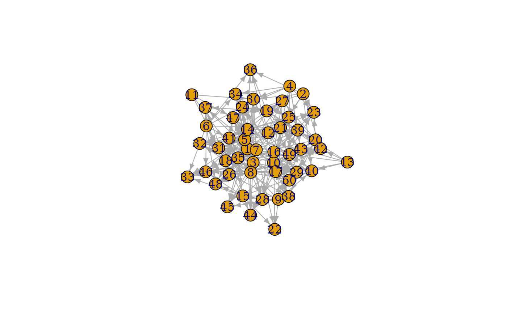

This set of games are build around different types of nodes and simulating their interaction. The nature of their algorithm is described in detail at the linked igraph documentation.
play_preference( n, n_types, p_type = rep(1, n_types), p_pref = matrix(1, n_types, n_types), fixed = FALSE, directed = TRUE, loops = FALSE ) play_preference_asym( n, n_types, p_type = matrix(1, n_types, n_types), p_pref = matrix(1, n_types, n_types), loops = FALSE ) play_bipartite(n1, n2, p, m, directed = TRUE, mode = "out") play_traits( n, n_types, growth = 1, p_type = rep(1, n_types), p_pref = matrix(1, n_types, n_types), callaway = TRUE, directed = TRUE ) play_citation_type( n, growth, types = rep(0, n), p_pref = rep(1, length(unique(types))), directed = TRUE )
| n, n1, n2 | The number of nodes in the graph. For bipartite graphs |
|---|---|
| n_types | The number of different node types in the graph |
| p_type | The probability that a node will be the given type. Either a vector or a matrix, depending on the game |
| p_pref | The probability that an edge will be made to a type. Either a vector or a matrix, depending on the game |
| fixed | Should n_types be understood as a fixed number of nodes for each type rather than as a probability |
| directed | Should the resulting graph be directed |
| loops | Are loop edges allowed |
| p | The probabilty of an edge occuring |
| m | The number of edges in the graph |
| mode | The flow direction of edges |
| growth | The number of edges added at each iteration |
| callaway | Use the callaway version of the trait based game |
| types | The type of each node in the graph, enumerated from 0 |
A tbl_graph object
play_preference: Create graphs by linking nodes of different types
based on a defined probability. See igraph::sample_pref()
play_preference_asym: Create graphs by linking nodes of different types
based on an asymmetric probability. See igraph::sample_asym_pref()
play_bipartite: Create bipartite graphs of fixed size and edge count
or probability. See igraph::sample_bipartite()
play_traits: Create graphs by evolving a graph with type based edge
probabilities. See igraph::sample_traits() and
igraph::sample_traits_callaway()
play_citation_type: Create citation graphs by evolving with type based
linking probability. See igraph::sample_cit_types() and
igraph::sample_cit_cit_types()
Other graph games:
component_games,
evolution_games,
sampling_games
